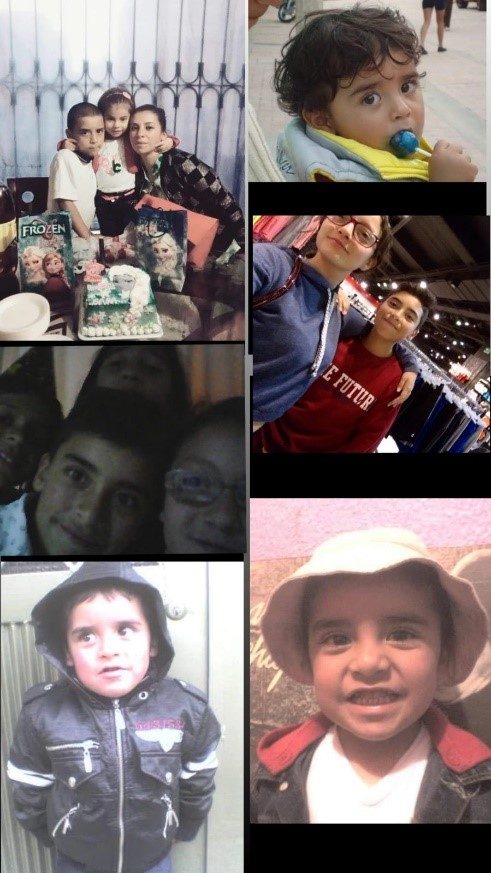
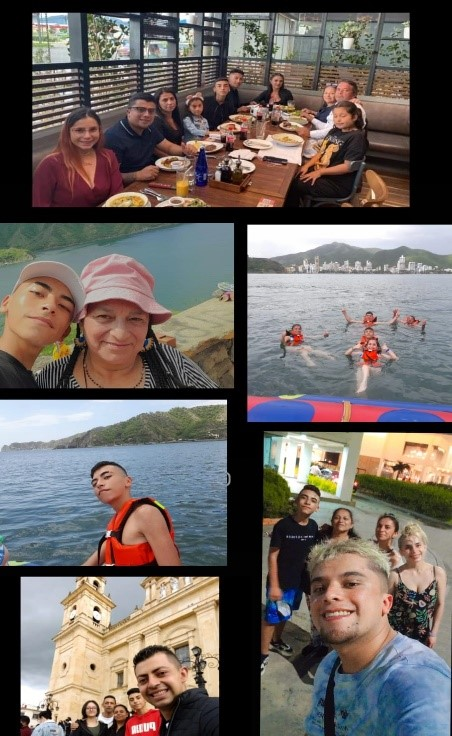

Mi Proyecto - Mi Pensamiento
Historia de mi Vida
GESTACION |
Nací el 27 de septiembre del 2007, en bogotá colombia en la clínica del bosque, me registraron el 6 de diciembre del 2007, mi nombre quedó mál escrito y ya toda mi vida quedo asi. | |
NIÑEZ |
Tuve una niñez muy linda rodeado de mucho amor por parte de mi familia, parte de mi niñez fue compartida con mis primos, mayormente fue en el barrio Lisboa donde vivíamos en arriendo, toda mi niñez la he vivido al lado de mis abuelos los cuales me han consentido mucho, entre a transición en el colegio república dominicana. En este periodo de vida salía con mis primos a dar vueltas en cicla, mi abuela por parte de papa era muy especial conmigo me llevaba juguetes y comida, aunque en mi niñez no fui muy unido a la familia de mi papa ya que en este momento no era muy consiente de quienes eran ellos, poco a poco fui conociéndoles un poco más y son unas maravillosas personas, aunque con mi papa no conecte del todo con su familia si, ya que ellos siempre se vieron muy interesados en ser parte de mi niñez. |

|
ADOLESCENCIA |
Mi adolescencia fue igualmente muy linda vivida al lado de mi familia por parte de mama, tuvimos que mudarnos de casa nos mudamos al barrio el poa, igualmente parte de mi familia se mudo para estar mas cerca, tambien comparti mucho con mis primos ya que mi abuela nos cuidaba a todos y yo vivía con mis abuelos tuve, mi primer celular, y segui en el colegio república dominicana. Igualmente en mi adolescencia no todo fue felicidad ya que en esta mi mama conocio una persona que actualmente es su pareja esto me afecto ya que no estaba igual que antes con nosotros, nos toco empezar a salir con el y eso. Aun asi recalco el papel que ha tenido mi mama ha sido muy bueno esta muy pendiente en toda ocasión se ha preocupado por mis estudios tanto que me esta apoyando con toda la proyecion que tengo respecto a mi futuro |

|